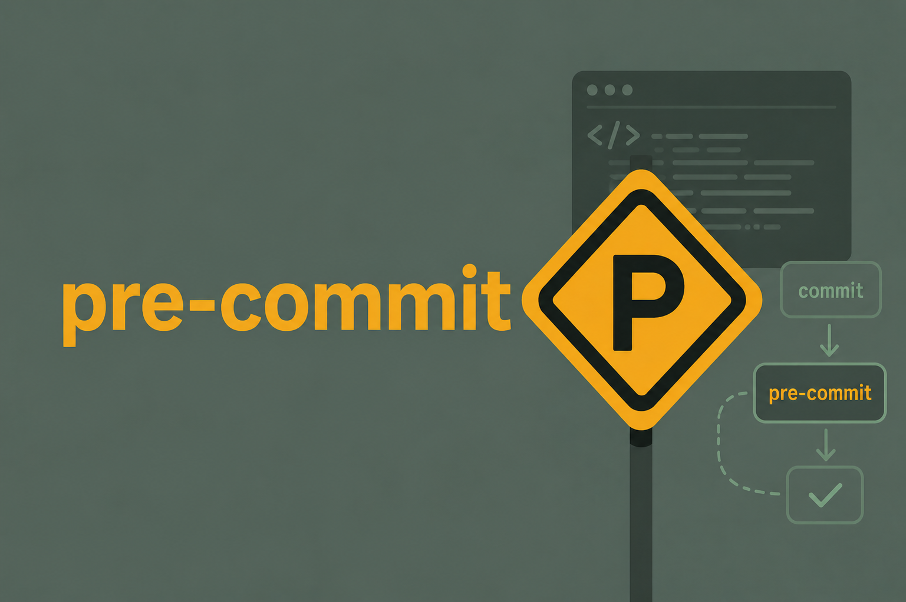

Introduction
Don’t Use Manual Procedures
People just aren’t as repeatable as computers are. Nor should we expect them to be.
– David Thomas and Andrew Hunt, The Pragmatic Programmer (2nd edition, p. 279)
Everybody is prone to oversee small mistakes that end up in the source repository. Suppose your team decided to use a code linter tool to avoid that in a project you are working on.
You also noticed that formatting code manually is time consuming and usually leads to too many subjective arguments over style. So, you suggested a code formatter to enforce coding standards in the project.
The challenge about setting standards is that everybody needs to adopt it. There are some degrees in which you can try to enforce these standards:
Ask developers to run the tools manually before they commit their changes. Spoiler: they (including you) will forget to do it.
Use a Continuous Integration (CI) tool to verify compliance automatically when a pull request is opened. This solves the previous approach, but it is not immediate feedback. You push your changes to the remote repository, wait some minutes for the CI task to run, and, only then, you get to see that, indeed, you forgot to run the linter.
Automatically run the tools before you even commit changes to the local repository.
Git Hook is a script that Git executes before or after events such as: commit, push, and receive. They are a built-in feature of Git and are useful for enforcing coding standards, running tests, and more.
The pre-commit tool, as you can imagine, deals with hooks that are triggred before commit events. It offers an interface to manage hooks, install them in your local repository, and run them automatically every time you git commit.
The most common use case is to run code linting and formatting tools before you commit your changes. Not only syntax errors, many linters also detect common pitfalls and bad practices of the language. You end up learning from small mistakes.
pre-commit is written in Python and, maybe because of this, I usually see it being used only in Python projects, but it can be used with any project that has a .git directory. There are many hooks for different languages and tools. pre-commit manages them while also offering an easy way to share hooks between projects.
Installation
You can install pre-commit using pip or any other Python package manager.
pip install pre-commit
uv add --dev pre-commit
conda install -c conda-forge pre-commitIt is also available in package managers for Linux and macOS.
sudo apt-get install pre-commit
brew install pre-commitUsage
To start using pre-commit, you need to create a configuration file named .pre-commit-config.yaml in the root of your repository.
pre-commit sample-config > .pre-commit-config.yaml# See https://pre-commit.com for more information
# See https://pre-commit.com/hooks.html for more hooks
repos:
- repo: https://github.com/pre-commit/pre-commit-hooks
rev: v3.2.0
hooks:
- id: trailing-whitespace
- id: end-of-file-fixer
- id: check-yaml
- id: check-added-large-filesOnce you configured your pre-commit hooks (more on that later), you need to install them in your Git repository.
pre-commit installNow every time you commit changes to your repository, pre-commit will run the hooks you defined in the configuration file. pre-commit hooks will only run against matching files that are staged for commit (i.e. git add). When you try to commit those files, pre-commit will run the hooks against them.
$ git add foo.py config.json
$ git commit -m "Add foo module"
[INFO] Initializing environment for https://github.com/pre-commit/pre-commit-hooks.
[INFO] Installing environment for https://github.com/pre-commit/pre-commit-hooks.
[INFO] Once installed this environment will be reused.
[INFO] This may take a few minutes...
Check Yaml...........................................(no files to check)Skipped
Fix End of Files.........................................................Passed
Trim Trailing Whitespace.................................................Failed
- hook id: trailing-whitespace
- exit code: 1pre-commit will create virtual environments for the installed hooks’ dependencies, so you don’t have to worry about installing them in your system. The Initializing and Installing steps are executed only the first time you run pre-commit in a repository or on hook updates. After that, the hooks are cached in ~/.cache/pre-commit and reused. You can change the cache location with the PRE_COMMIT_HOME environment variable.
Any failing hook will prevent the commit from happening. A commit will only succeed if all hooks pass.
If you are implementing pre-commit in an existing repository, you can run the hooks against all files in the repository by running:
pre-commit run --all-filesKeep in mind that hooks are only installed in your local repository. They are not pushed to the remote repository. This is because they are specific to your local environment and may not be relevant to other developers. Moreover, someone could define malicious hooks buried under .git/hooks/ that could compromise the security of the repository. So, you must run pre-commit install in every new clone of the repository.
You can automatically update versions of all hooks’ repositories with a single command.
pre-commit autoupdateTo uninstall hooks from your repository:
pre-commit uninstallConfiguration
The full description of the configuration file can be found in the pre-commit documentation.
pre-commit hooks in the .pre-commit-config.yaml file are a list of repository mappings. Each repository mapping has the following keys:
repo: URL of the repository that contains the hooks.rev: revision or tag of the repository to use.hooks: list of hook mappings.
Hook mappings have many configuration options, but the most common are usually:
id: name of the hook (only required key)files: regex pattern of files to run on (defaults to'', i.e all files)exclude: exclude files that were matched byfiles(defaults to^$, i.e no files)args: list of additional parameters to pass to the hook
pre-commit offers its own collection of hooks (usually quite generic) and you can also use hooks from other repositories or create one yourself. There are many hooks available for different languages and tools.
You can find a list of supported hooks in the pre-commit documentation. Note that this list is not extensive and you can find more hooks in other repositories.
Check my selection in the next post: pre-commit: Hooks reference.
Selecting or ignoring files
You can select or ignore files which the pre-commit will run with the key or exclude keys in the hook mapping, respectively. key and exclude are a regex patterns matched by re.search().
A programmatically generated file is often a good candidate for exclusion. Suppose you render a README.md file from a template README.md.tpl. Checking for README.md format style could be unimportant in this case.
repos:
# Ignore a file
- repo: https://github.com/igorshubovych/markdownlint-cli
rev: v0.40.0
hooks:
- id: markdownlint
args: ["--fix"]
exclude: ^README.md$
# Ignore multiple files
- repo: https://github.com/igorshubovych/markdownlint-cli
rev: v0.40.0
hooks:
- id: markdownlint
args: ["--fix"]
exclude: ^(README.md|CHANGELOG.md)$
# Ignore directories
- repo: https://github.com/igorshubovych/markdownlint-cli
rev: v0.40.0
hooks:
- id: markdownlint
args: ["--fix"]
exclude: ^src/templates/
# Ignore file extension
- repo: https://github.com/pre-commit/mirrors-prettier
rev: v4.0.0-alpha.8
hooks:
- id: prettier
exclude: \.md$You can globally exclude files in top level of the configuration file.
exclude: ^src/templates/
repos: []If selecting is easier than excluding, use the files parameter.
repos:
- repo: https://github.com/pre-commit/mirrors-prettier
rev: v4.0.0-alpha.8
hooks:
- id: prettier
files: ^(.*\.ya?ml|.*\.json)$You can also combine both keys. In that case, exclude tells pre-commit to ignore files selected by files.
CLI arguments
The args key in the hook mapping specifies a list of arguments for the hook’s command call. This allows you to set configurations for the tool used by the hook. For example,
repos:
- repo: https://github.com/sqlfluff/sqlfluff
rev: stable_version
hooks:
- id: sqlfluff-lint
args: [--dialect, postgres]Sometimes it is better to configure a hook in repos[*].hooks[*].args than creating a new small config file for the specific tool.
Custom hooks
You can create repository-local hooks from your own scripts. Such hooks are defined as a local repository mapping:
repos:
- repo: local
hooks: []Here is an example from pandas repository (v2.2.2):
repos:
- repo: local
hooks:
- id: pip-to-conda
name: Generate pip dependency from conda
language: python
entry: python scripts/generate_pip_deps_from_conda.py
files: ^(environment.yml|requirements-dev.txt)$
pass_filenames: false
additional_dependencies: [tomli, pyyaml]The script generates a requirements-dev.txt (pip) file from dependencies in environment.yml (Conda). If there are changes to the staged requirements-dev.txt after running the script, then pre-commit fails.
It would be easy to forget to manually update – and by “manually” I mean “running the script”– requirements-dev.txt every time there is an update to environment.yml. A good oportunnity to add a pre-commit hook and never worry again.
There are many possible configurations for repository-local hooks, such as language support. See Creating new hooks for the full description.
If you find that your hooks may be useful in other projects, you can create a .pre-commit-hooks.yaml file containing a list of hook mappings to share. Now pre-commit knows how to install hooks from your repository.
This is how the hooks I used over the post are defined. For example, in github.com/pre-commit/pre-commit-hooks (v4.6.0) from General section:
# .pre-commit-hooks.yaml (redacted)
- id: check-added-large-files
name: check for added large files
description: prevents giant files from being committed.
entry: check-added-large-files
language: python
stages: [commit, push, manual]
- id: check-ast
name: check python ast
description: simply checks whether the files parse as valid python.
entry: check-ast
language: python
types: [python]Conclusion
It is funny to think how re-emerging situations like the one described in the Introduction are the reason why so many development tools are born. I first tried pre-commit to save time.
I care a lot about code readability, but formatting takes time. Convincing people why it is important also takes time.
Mistypos happen, but sending a code to a CI/CD pipeline to see it fail over a missing bracket takes time.
Forgetting takes time, and forgetting minor things repeatably is kind of infuriating, really.
Time is your most precious resource.
The pleasant surprise was to notice that I was also learning from using pre-commit. Some rules of code linters are not just over syntax, they warn you about a language’s pitfall that could create silent bugs. Sometimes we get frustrated by someone pointing out every minor mistake, especially by a computer. Yet pre-commit hooks make it worth. (free code formatting and review, come on!)
If you strive for quality in your daily work, do not underestimate how much time you can end up wasting on seemingly trivial tasks, such as formatting code to improve readability. They build up fast: “We will automate it later. Now, just click here and here, open this, change that, check if… do you want to write it down?”. Do not overload your mind with such things, you probably have enough going on. Use this extra time to think about the real challenges of the project and design good solutions.
To help you get started, the next post is a reference to pre-commit hooks to various languages and how to configure them.
Check it out: pre-commit: Hooks reference